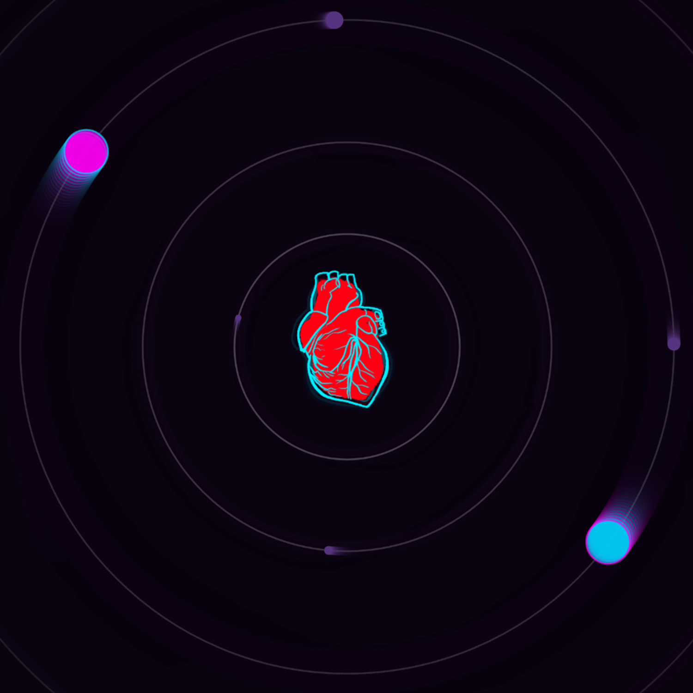
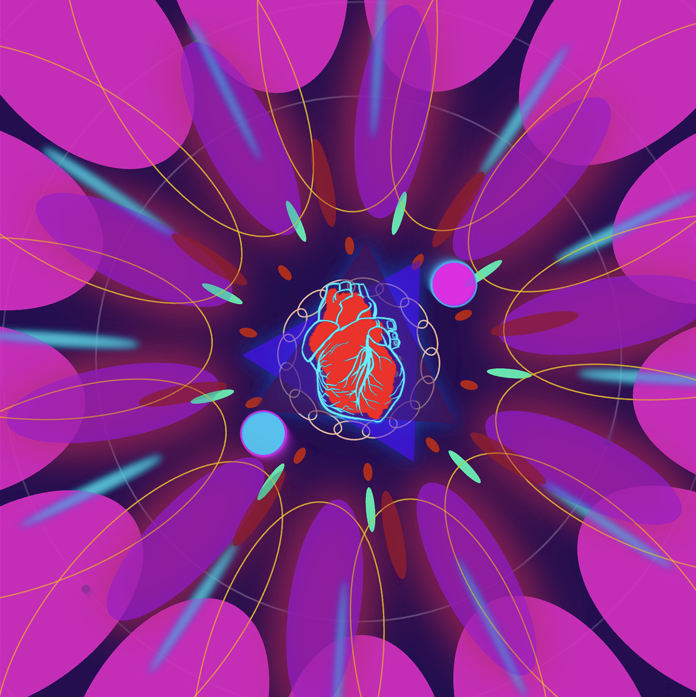
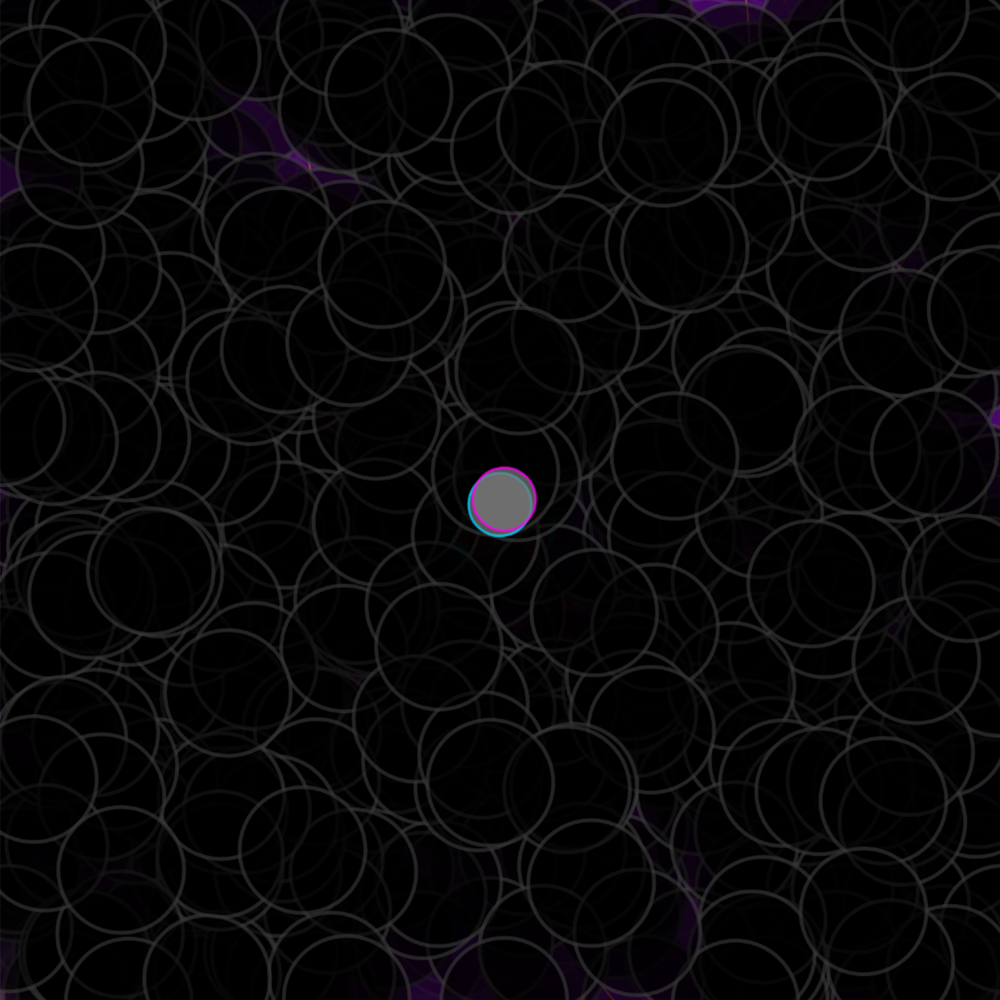

There are thousands of stars in the universe, spreading in different galaxies, just like our human beings. We are born in different countries, raised in various cultures and families. We are all wandering in our own world. So it is a real mystery and miracle for me to feel that different individuals meet each other and fall in love with each other。 So I just created a device to visualize and simulate the feelings and emotions in one relationship.
When we first meet each other, our world(our background color) has already begun to change. It becomes more colorful and bright. When we get closer, when the flower of love starts to bloom. It just brings us unparalleled pleasure. It will create a kind of illusion which will make you blind. Everything has changed its original appearance. It sometimes will drive people to madness，maxixam all your emotions.
Then bad things happen, two individuals get so close that they want to totally possess and control each other. They have no personal space. Then, they started to quarrel, noise appeared in love. Finally, all the things go black，nothing left. The happy memories are also fragmented. The two separated and returned to the original point.
